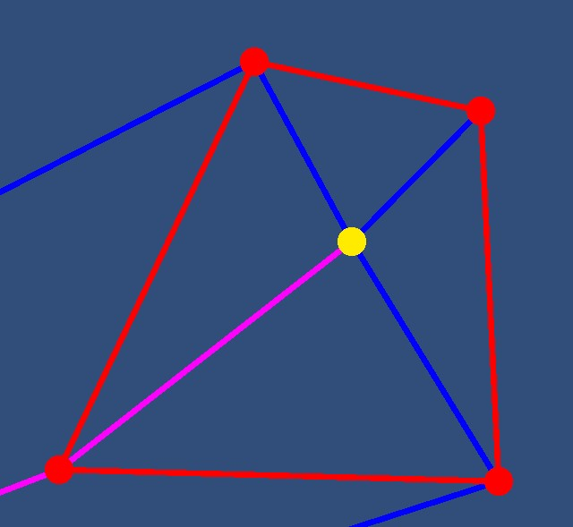
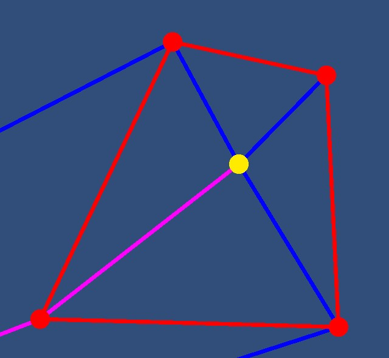

How It Works:
A visibility graph works by taking two start points and the verticies of all polygons in the maze. Then for each vertice of each polygon, determine which other vertices are within a line of sight (not through another polygon), and create an edge between that vertex and the other one. The only modification needed for this implementation is that we must allow edges to be formed on the edges of polygons for the shortest path algorithm. This graph is later used with the A* shortest path algorithms to determine the shortest path from the player to the Minotaur. The neighbors of each node connected by an edge is stored and then passed along with node location and heuristics (Euclidean distance to the end) to the A* algorithm. This algorithm uses these heuristics to determine the order in which nodes are investigated. During this process, nodes are assigned a current shortest distance to the start, and its neighbor that is closest to the start. At the end of the process we can work back through the nodes from the end node and define the shortest path.
Controls:
The green dot is you or the start point, and the yellow dot is the Minotaur or the end point. When you start there is a straight path between you and the Minotaur shown by the magenta line.
- To add obstacles, click on the red draw button. The button will turn green, this means you are drawing. Click on at least 3 points on the screen, then click the draw button again to finish the polygon. Your shape will be drawn and a visibility graph and shortest path will be calculated and displayed. To draw more polygons, repeat the steps using the draw button. When the draw button is red your clicks will not draw polygons and when it is green they will.
- To move the start point, click the red 'start point' button, then click on the screen where you want the start point to be.
- To move the end point, click the red 'end point' button, then click on the screen where you want the end point to be.
- The clear button will clear all polygons and the visibility graph and shortest path.
Limitations
In the current implementation, the player can only draw polygons that don't cross over itself. The draw tool is not advanced enough to disallow this, and it will break the visibility graph and shortest path algorithms. This might seem obvious as if a polygon crosses over itself it isn't really a singular polygon. Additionally the player can't draw a polygon around the start or end point. This will cause the visibility graph to break as well. A maze where the player or Minotaur isn't a very well designed maze.
 

Complexity Analysis
The overall complexity is taken up by our CreateVisibilityGraph method which iterates over all pairs of vertices and checks all polygon edges.
Specifically there are the outer and inner loops that cover all vertices which is O(n2)
Within these loops there is a loop that goes through each polygonal edge which takes O(m)
The final time complexity of our program is O(n2 * m)
We theorize that this time could be improved with an octree implementation. This would allow us to only check vertices that are within a certain distance of each other.
Example runs:
- 9 points and 17 edges took 0ms
- 45 points and 80 edges took 5ms
- 405 points and 233 edges took 857ms
Other Projects
Visibility Graphs have applications outside of polygonal path finding. Visibility graphs have been used with Time Series , and researchers have been able to apply graph theory and network analysis to gain insights on datasets. Researchers are studying the computational complexities of different visibility graph algorithms. One paper proposes a method called GVG to analyze biological time series. First they convert the time series into visibility graphs which can reveal relationships between data points. Lines are drawn from the top of bar graphs to every point visible from that point. Once this time series data is represented in a graph, the encoded relationships can be manipulated and analyzed.